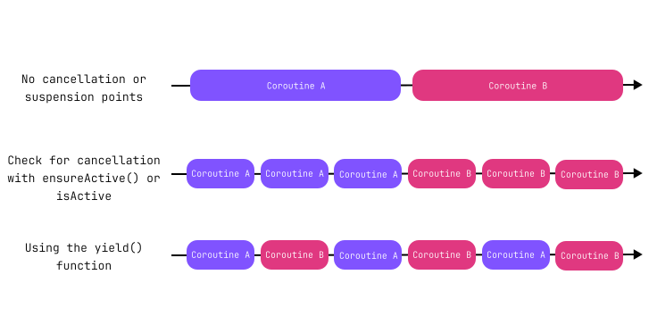

取消允许在协程完成前请求停止它。这样可以终止已不需要的工作，例如协程仍在运行时用户关闭窗口或离开当前界面。
可以借此提前释放资源，避免协程访问已销毁的对象。对于不断重复工作的长时间运行协程，也可以用取消来停止它，例如以下任务。
发送心跳。
执行定时任务。
更新状态，使其反映最新读数，例如时钟界面的时间。
取消通过 Job 句柄进行。Job 表示协程的生命周期和父子关系，可以查询协程是否活跃，也可以按照结构化并发的规则同时取消它及其子任务。
取消协程
对协程的 Job 调用 cancel() 就会请求取消该协程。launch() 等构建器返回 Job；async() 返回的 Deferred 实现了 Job，因此也支持同样的取消操作。 [1]
可以手动调用 cancel()；父协程被取消时，取消也会自动传播给子协程。
协程被取消后，下次检查取消状态时会抛出 CancellationException。kotlinx.coroutines 中的 delay() 等挂起函数会在挂起时检查取消。
可以调用 awaitCancellation() 使协程一直挂起直到被取消，效果相当于 delay(Duration.INFINITE)。
下面手动取消一个协程。
import kotlinx.coroutines.*
suspend fun main() {
//sampleStart
withContext(Dispatchers.Default) {
// 用作协程已经开始运行的信号
val childStarted = CompletableDeferred<Unit>()
val childJob: Job = launch {
println("The coroutine has started")
// 将 CompletableDeferred 标记为已完成，
// 表示协程已经开始运行
childStarted.complete(Unit)
try {
// 一直挂起
// 只要协程没有被取消，这个调用就会一直等待
awaitCancellation()
} catch (e: CancellationException) {
println("The coroutine was canceled: $e")
// 捕获取消异常后，务必重新抛出！
throw e
}
println("This line will never be executed")
}
// 等协程开始运行后再取消它
childStarted.await()
// 取消协程，
// 因此 awaitCancellation() 会抛出 CancellationException
childJob.cancel()
}
// withContext()、coroutineScope() 等协程构建函数
// 等待所有子协程完成，
// 即使子任务已经被取消
println("All coroutines have completed")
//sampleEnd
}本例用 CompletableDeferred 表示协程已经开始运行。协程一开始就调用 complete()，外部的 await() 等到它完成才返回。取消本身并不要求这项检查；这样写只为了稳定复现示例，让协程在被取消前有机会启动并打印消息。
Deferred 实现了 Job，因此用 async() 创建的协程也可以用同样的方法取消。
val deferred = async { /* ... */ }
deferred.cancel()取消传播
在结构化并发中，取消协程也会取消它的全部子协程，避免父协程被取消后子任务继续运行。
例如：
import kotlinx.coroutines.*
suspend fun main() {
withContext(Dispatchers.Default) {
//sampleStart
// 用作子协程均已发起启动的信号
val childrenLaunched = CompletableDeferred<Unit>()
// 启动两个子协程
val parentJob = launch {
launch {
println("Child coroutine 1 has started running")
try {
awaitCancellation()
} finally {
println("Child coroutine 1 has been canceled")
}
}
launch {
println("Child coroutine 2 has started running")
try {
awaitCancellation()
} finally {
println("Child coroutine 2 has been canceled")
}
}
// 将 CompletableDeferred 标记为已完成，
// 表示已经发起了对子协程的启动
childrenLaunched.complete(Unit)
}
// 等待父协程发出启动信号
// 它的所有子任务
childrenLaunched.await()
// 取消父协程，它会取消所有子任务
parentJob.cancel()
//sampleEnd
}
}每个子协程都使用 finally 块，已进入该块对应的 try 后，取消时会执行收尾代码。这里的 CompletableDeferred 只表示已经发起了对子协程的启动，不能保证它们已经开始执行。如果在开始之前就被取消，程序不会打印这些消息。
让协程响应取消
Kotlin 协程采用协作式取消。协程须在可取消的操作中挂起，或显式检查取消，才能响应取消请求。
本节介绍如何加入挂起点，例如调用 yield()，让协程能响应取消。
挂起点与取消
被请求取消的协程仍会运行，直到到达可能挂起的位置，即挂起点。如果它在这里挂起，可取消的挂起函数会检查是否已经取消。若已取消，就抛出 CancellationException，协程停止原有工作。
调用 suspend 函数是一个可能的挂起点，但不一定真的挂起。例如，等待 Deferred 时，只有结果尚未准备好才需要挂起。
下面使用几种常见的挂起操作，让等待中的协程能在被取消时停止。
import kotlinx.coroutines.*
import kotlinx.coroutines.sync.Mutex
import kotlinx.coroutines.channels.Channel
import kotlin.time.Duration.Companion.milliseconds
import kotlin.time.Duration
suspend fun main() {
//sampleStart
withContext(Dispatchers.Default) {
val childJobs = listOf(
launch {
// 挂起直到被取消
awaitCancellation()
},
launch {
// 挂起直到被取消
delay(Duration.INFINITE)
},
launch {
val channel = Channel<Int>()
// 等待一个始终不会发来的值，此时协程挂起
channel.receive()
},
launch {
val deferred = CompletableDeferred<Int>()
// 等待一个始终不会完成的结果，此时协程挂起
deferred.await()
},
launch {
val mutex = Mutex(locked = true)
// 等待一把一直没有释放的互斥锁，此时协程挂起
mutex.lock()
}
)
// 留出时间，让子协程启动并进入挂起状态
delay(100.milliseconds)
// 取消所有子协程
childJobs.forEach { it.cancel() }
}
println("All child jobs completed!")
//sampleEnd
}挂起函数 yield()
协程若一直占用当前线程而不挂起，同一线程上的其他协程就要等它执行完。这些协程只能在这条线程上依次执行。长时间不挂起也可能让协程在收到取消请求后仍继续运行。
对长时间不挂起的计算，特别是 CPU 密集的计算，可以定期调用 yield()。它给其他协程使用当前线程的机会，并定期检查取消状态。若已被取消，yield() 会抛出 CancellationException。

例如：
import kotlinx.coroutines.*
fun main() {
//sampleStart
// runBlocking 在当前线程上运行本例的所有协程
runBlocking {
val coroutineCount = 5
repeat(coroutineCount) { coroutineIndex ->
launch {
val id = coroutineIndex + 1
repeat(5) { iterationIndex ->
val iteration = iterationIndex + 1
// 短暂挂起，给其他协程运行机会
// 省略这一步时，这些协程会依次执行
yield()
// 打印协程编号和本轮循环的编号
println("$id * $iteration = ${id * iteration}")
}
}
}
}
//sampleEnd
}本例中的每个协程都在两轮迭代之间调用 yield()，让其他协程有机会运行。
显式检查取消
可以显式检查取消，使长时间执行的代码无需挂起也能响应请求。但一直不挂起的协程可能阻止同一线程上的其他协程运行，直到它完成。除非这正符合需求，否则可以用 yield()。
有的检查返回布尔值，有的直接抛出异常。
协程被取消时，isActive 属性返回
false。协程被取消时，ensureActive() 抛出
CancellationException。
协程取消时中断阻塞代码
JVM 上的 Thread.sleep()、BlockingQueue.take() 等阻塞函数会占用当前线程。线程中断能让这类调用提前结束。但在协程中调用它们时，取消协程并不会自动中断线程。
要在取消协程时中断线程，可将支持中断的阻塞代码放进 runInterruptible()。
import kotlinx.coroutines.*
suspend fun main() {
//sampleStart
withContext(Dispatchers.Default) {
val childStarted = CompletableDeferred<Unit>()
val childJob = launch {
try {
// 取消协程会触发线程中断
runInterruptible {
childStarted.complete(Unit)
try {
// 长时间阻塞当前线程
Thread.sleep(Long.MAX_VALUE)
} catch (e: InterruptedException) {
println("Thread interrupted (Java): $e")
throw e
}
}
} catch (e: CancellationException) {
println("Coroutine canceled (Kotlin): $e")
throw e
}
}
childStarted.await()
// 取消协程，并中断正在执行 Thread.sleep() 的线程
childJob.cancel()
}
//sampleEnd
}取消时安全地处理返回值
已挂起的协程被取消时，即使结果已经可用，也可能以 CancellationException 恢复，而不交回结果。这种行为称为及时取消，可防止已取消作用域中的代码继续使用结果，例如更新已经关闭的屏幕。
例如：
// 定义一个在 UI 线程运行的协程作用域
class ScreenWithButtons(private val scope: CoroutineScope) {
fun loadAndUpdateButtons(filename: String) {
scope.launch {
// withContext() 进入块之前会检查取消状态
// 以及代码块返回之后
val buttonNames = withContext(Dispatchers.IO) {
// 这是阻塞调用，无法自行响应协程取消
readLines(filename)
}
// 此时可以安全调用 updateUi()
// 因为协程被取消时，withContext() 不会正常返回，
// 在此调用之前，UI 线程上的其他代码没有机会销毁按钮
updateUi(buttonNames)
}
}
// 这个函数要访问按钮，只能在 UI 线程调用
// 按钮销毁后再调用会抛异常
private fun updateUi(buttonNames: List<String>) {
// 示意代码：用指定名称更新按钮
}
// 只在 UI 线程调用这个函数
fun leaveScreen() {
// 离开界面时取消作用域
// 此时已不能再更新界面
scope.cancel()
}
}
// UI 控制器中的代码
setHandler(Event.ScreenClosed) {
// 在 UI 线程运行
screenWithButtons.leaveScreen()
buttons.dispose()
}本例中，若 leaveScreen() 在 withContext(Dispatchers.IO) 返回按钮名称前取消协程，withContext 会响应取消，updateUi() 就不会执行。
及时取消防止过期值被使用，但也可能中断重要值的交接。例如协程取得一个 AutoCloseable 资源后，可能在执行关闭资源的代码之前就被取消，从而失去这个资源。应把清理放在即使接收协程被取消也一定会执行的位置。
例如：
import java.nio.file.*
import java.nio.charset.*
import kotlinx.coroutines.*
import java.io.*
// 使用在 UI 线程运行协程的作用域
class ScreenWithFileContents(private val scope: CoroutineScope) {
fun displayFile(path: Path) {
scope.launch {
// 用变量保存读取器，使 finally 块能够关闭它
var reader: BufferedReader? = null
try {
withContext(Dispatchers.IO) {
reader = Files.newBufferedReader(
path, Charset.forName("US-ASCII")
)
}
// withContext() 完成后，使用先前保存的读取器
updateUi(reader!!)
} finally {
// 即使协程被取消，也会关闭读取器
reader?.close()
}
}
}
private suspend fun updateUi(reader: BufferedReader) {
// 显示文件内容
while (true) {
val line = withContext(Dispatchers.IO) {
reader.readLine()
}
if (line == null)
break
addOneLineToUi(line)
}
}
private fun addOneLineToUi(line: String) {
// 示意代码：向界面添加一行
}
// 只能在 UI 线程调用
fun leaveScreen() {
// 取消作用域，使其中的协程停止更新界面
scope.cancel()
}
}在本例中，先用变量保存 BufferedReader，然后在 finally 块中关闭它。这样即使协程被取消，资源也能释放。
执行不可取消的代码块
若要避免取消影响协程的某一小段工作，可以将 NonCancellable 传给 withContext()。
有些操作必须完成，例如用挂起的 close() 函数关闭资源。此时即使协程在操作完成前被取消，也可以用 NonCancellable 确保清理完成。
例如：
import kotlinx.coroutines.*
import kotlin.time.Duration.Companion.milliseconds
//sampleStart
val serviceStarted = CompletableDeferred<Unit>()
fun startService() {
println("Starting the service...")
serviceStarted.complete(Unit)
}
suspend fun shutdownServiceAndWait() {
println("Shutting down...")
delay(100.milliseconds)
println("Successfully shut down!")
}
suspend fun main() {
withContext(Dispatchers.Default) {
val childJob = launch {
startService()
try {
awaitCancellation()
} finally {
withContext(NonCancellable) {
// 如果省略 withContext(NonCancellable)，
// 协程被取消，这个函数无法正常执行完
shutdownServiceAndWait()
}
}
}
serviceStarted.await()
childJob.cancel()
}
println("Exiting the program")
}
//sampleEnd超时
超时会在指定时长过去后自动取消协程，可用于停止耗时过长的操作。
例如，从服务器下载图片超时后，可以重试或改为读取本地缓存。
给 withTimeoutOrNull() 传入 Duration 来指定超时。
import kotlinx.coroutines.*
import kotlin.time.Duration.Companion.milliseconds
//sampleStart
suspend fun slowOperation(): String {
try {
delay(300.milliseconds)
return "A"
} catch (e: CancellationException) {
println("The slow operation has been canceled: $e")
throw e
}
}
suspend fun fastOperation(): String {
try {
delay(15.milliseconds)
return "B"
} catch (e: CancellationException) {
println("The fast operation has been canceled: $e")
throw e
}
}
suspend fun main() {
withContext(Dispatchers.Default) {
val slow = withTimeoutOrNull(100.milliseconds) {
slowOperation()
}
println("The slow operation finished with $slow")
val fast = withTimeoutOrNull(100.milliseconds) {
fastOperation()
}
println("The fast operation finished with $fast")
}
}
//sampleEnd如果操作用时超过指定的 Duration，withTimeoutOrNull() 会返回 null。